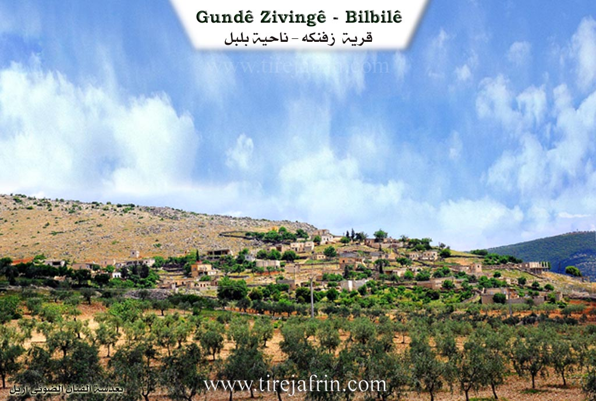
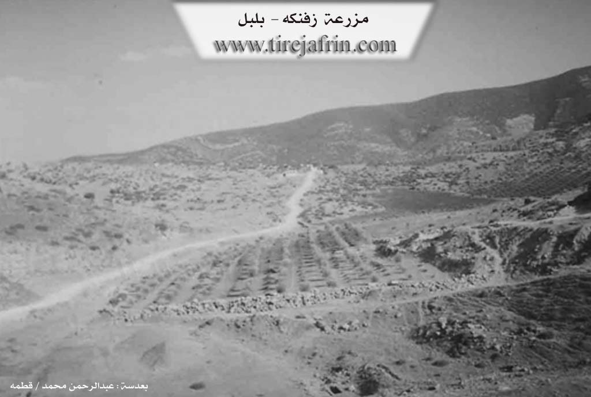

General Information
Nahiya (Subdistrict)
Bilbilê
Also Known As
Farm Ashuni, Ziving, Zivingê, زفنكه, مزرعة عشوني, زفنك
Tribes
Şkesta
Families, Clans, etc.
Mala Birokî Tana, Mala Dara Şemsê, Mala Hanî Kêlê, Mala Heyso, Mala Mendû, Mala Meyrê Tana, Mala Naso, Mala Pîta Manan, Mala Xolû, Mala Çeqmaqo
Photos


Basic Information about Zivingê - Bilbilê
Source: Afrin 366
Etymology: Zivinga Şkesta (Winter quarters of the Şkesta), referred to as Cûcik Ziving (Small Ziving) in the Turkish era
Foundation Date/Period: 500 to 600 years ago
Springs: Sedê Aşûnê, Qopla, Qirgûlê, Qutê
Hills: Çiyayê Hawarê, Çiyayê Tle
Ruins: Xerabe
Trees: Dara Ta'wî, Darik, Darê Şkilarê
Other Landmarks: Gundê Aşûnê, Gundê Qesima, Gundê Karrê
Summaries
I. Summary from TirejAfrin Site (English) of Zivingê - Bilbilê
Source: https://www.tirejafrin.com/site/kura%20afrin%20%20%20bilbile%20-%20zavngh.htm
Ziving, Ziving, Mezra'et 'Eşûnî /385 inhabitants, 22km, 640m/:
Ziving: Means "the cave" in Kurdish.
It is a small village located on the eastern slopes of Çiyayê Hawar. Wadî Cerqa passes by its western side, and it is located about 1km south of the village of Eşûne.
It was stated in the book Efrîn... Her River and Her Green Hills: Ziving: A farm in Çiyayê Kurmênc belonging to the Bilbile sub district, Efrîn region, Heleb governorate. It is a small farm located atop a limestone plateau whose slopes incline slightly toward the south to end at Wadî Cerqe which heads toward the west. Several watercourses work to separate it from the neighboring highlands, furrowing its agricultural lands which have clay soil. It is 1.5km away from the village of Eşanî toward the southeast.
It is bordered to the north by a mountainous height and the village of Eşûne; to the south by a deep torrential valley, a high mountain range called Çiyayê Hawar, and the village of Simalik; to the west by a torrential valley, a mountainous height planted with olive trees and grapevines, and the village of Dîk Obesî on the highest peak; and to the east by a rugged mountain range and the village of Xelîlak Uşaxî.
The number of its houses amounts to 15 houses, and its age is approximately 150 years. Its old houses are made of stone and mud with flat wooden roofs, while the modern ones are made of stone and cement. An electricity network and a modern primary school are available in it. The village drinks from cisterns that collect rainwater. Its residents work in the cultivation of rain fed olives, grapevines, almonds, and grains, alongside raising sheep and goats. The road from the public intersection to the village is dirt and unpaved.
It is mentioned that Şêx Luqman, the imam of the Eşrefiye mosque in Efrîn, is among the people of this village.
Village Mukhtar: Nûrî Bilal Mihemed
Sources of Information:
- Book: جبل الكرد (عفرين) دراسة جغرافية Çiyayê Kurmênc (Efrîn): A Geographical Study by د. محمد عبدو علي Dr. Mihemed Ebdo Elî.
- Book: عفرين .... نهرها وروابيها الخضراء Efrîn... Her River and Her Green Hills by عبدالرحمن محمد Ebdulrehman Mihemed from the village of Qetme.
- Studies of Navenda Tirej Soft / Ebdulrehman Hacî Osman.
- Some residents of the villages.
Preparation and execution: Manager of the Tirej Efrîn site: Ebdulrehman Hacî Osman 20/12/2013
I. Summary from TirejAfrin Site (English) of Zivingê
According to the book 'جبل الكرد' 'Mountain of the Kurds (Afrin)' Geographical Study:
Zivingê - Bilbilê (زفنكه), Ziving (زفنك), Farm Ashuni (مزرعة عشوني) /385N - 22km - 640m/:
- Zîvink (زفنك): means "cave" in Kurdish.
- A small village located on the eastern slopes of Hawar Mountain (جبل هاوار). Jarqa Valley (وادي جرقا) passes by its western side, and it is about 1km south of Ashuna Village (ق.عشونة).
According to the book 'عفرين .... نهرها ورواطيها الخضراء' 'Afrin.... Its River and Green Hills':
Zivink (زفنك): A farm in Kurdistan Mountain (جبل الكرد) that belongs to Bulbul District (ناحية بلبل), Afrin City region (منطقة عفرين), Aleppo Governorate (محافظة حلب).
It is a small farm located on a calcareous plateau whose slopes incline gently southward to end at Jarqa Valley (وادي جرقة) heading west. Several streams work to separate it from the neighboring heights, carving its agricultural lands with clayey soil. It is 1.5km southeast of Ashani Village (قرية عشاني). To the north, it is bordered by a mountainous elevation and Ashuna Village (قرية عشونة), to the south by a deep torrent valley and a high mountain chain called Hawari Mountain (جبل هواري) and Samalka Village (قرية سمالك), to the west by a torrent valley and mountainous elevation planted with olive and vine trees and Al-Dik Oba Si Village (قرية الديك أوبه سي) at the highest elevation, and to the east by a mountainous chain and rough terrain and Khalilak Oshaghi Village (قرية خليلاك أوشاغي).
The number of its houses is 15 houses, age about 150 years. Its old houses are stone-clay with flat wooden roofs and the modern ones are concrete stone. It has an electricity network and a modern elementary school. The village drinks from cisterns that collect rainwater. Its inhabitants work in olive, vine, legume and grain cultivation in addition to sheep and goat raising. The road from the main junction to the village is unpaved dirt.
It is mentioned that Sheikh Luqman (الشيخ لقمان), imam of Al-Ashrafiya Mosque (جامع الاشرفية) in Afrin City (عفرين), is from the people of this village.
Village Mayor: Nuri Bilal Muhammad (نوري بلال محمد)
II. Summary of Zivingê - Bilbilê from Afrin 366
Source: https://www.youtube.com/watch?v=1pYSxYo1dEc
Situated in the rugged highlands of Çiyayê Kurmênc near the Rajo district, the village of Ziving (locally known as Zivinga Şkesta) holds a history that local elders estimate to be between five and six centuries old. According to the village elder Ebû Mihemed, the settlement was originally established by the Mala Heyso family. He explains that the village name was historically Zivinga Şkesta, which implies a connection to the Şkesta tribe or group, as "ziving" typically denotes a winter quarter or shelter. During the period of Turkish or Ottoman administration, the village was recorded as Cûcik Ziving, translating to "Small Ziving," but the inhabitants have preserved their original Kurdish designation.
The social structure of Ziving is defined by specific waves of migration. While Mala Heyso is considered the founding lineage, Ebû Mihemed notes that other families such as Mala Hanî Kêlê and Mala Mendû arrived later to settle in the village. The documentary highlights the presence of several other households, including Mala Naso, Mala Çeqmaqo, Mala Pîta Manan, Mala Birokî Tana, Mala Dara Şemsê, and Mala Xolû. The village currently consists of approximately forty to fifty households. A significant aspect of daily life here is the challenge of water scarcity. The historical water source within the village was damaged or dried up, compelling residents to transport water from distant locations known as Qopla, Qirgûlê, and Qutê.
Culturally, Ziving retains deep connections to traditional Kurdish agrarian life. An elderly resident showcases various heritage items including a teşî for spinning wool, a dask for harvesting, and a cerê qurbetê, a durable jar used for carrying water on long journeys. She also details the local craft of making prayer beads using the hard seeds of the Dara Ta'wî tree (hackberry), referring to them as dendikê gindiye. The villagers maintain a strong sense of hospitality despite the difficult terrain and lack of infrastructure like consistent electricity.
The documentary also explores the immediate surroundings, specifically the neighboring site of Aşûnê and the Sedê Aşûnê (Aşûnê Dam). This area, located below Ziving, contains the ruins (xerabe) of older settlements and a government constructed reservoir. The host notes that the dam project remains somewhat incomplete and that the water level fluctuates significantly. From Ziving, the imposing peak of Çiyayê Hawarê is clearly visible, and the village is situated near other settlements such as Gundê Qesima and Gundê Karrê. The narrative emphasizes the resilience of the villagers who navigate the steep, unpaved roads (qorçox) to maintain their ancestral home in the mountains.
Transcriptions and Subtitles
| Source | Video | Subtitles | Transcript |
|---|---|---|---|
| Afrin 366 1 | Watch Video | Download SRT | View Transcript |
Possible Village Name Meaning of Zivingê - Bilbilê
Zîvink means "cave" in Kurdish.
Source: TirejAfrin Site